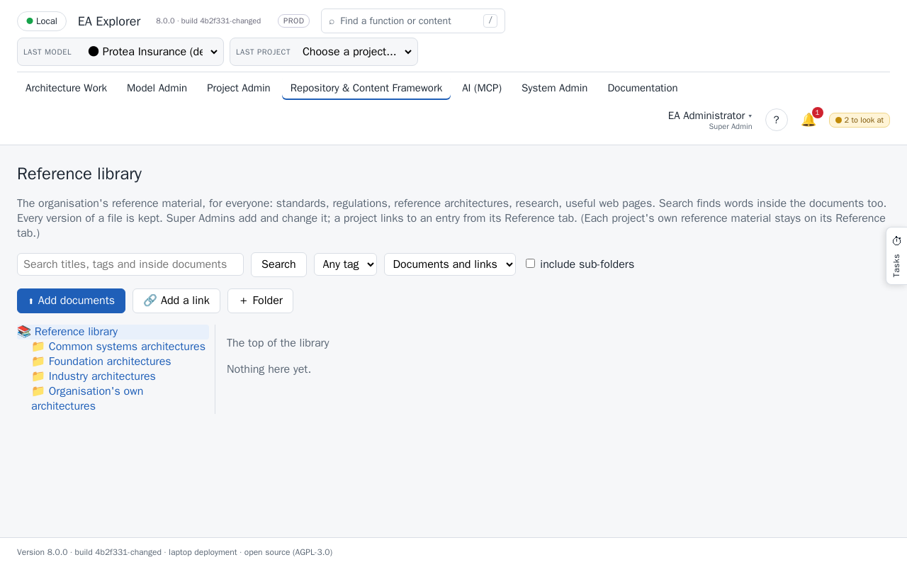

Add to the enterprise reference library
For: Industry model makers, Project Admin
A page or document others link from their projects.

#/reference-libraryWhy do this
The reference library holds material worth reusing across projects: reference architectures, patterns, external frameworks, your own guidance. A project links to it rather than copying it, so improvements reach everyone. See The Architecture Repository.
Reference models only help if they are sound and kept up to date, so the library has its own review: promote, request, approve, publish, and withdraw when a reference is past its time.
In TOGAF terms: The Enterprise Continuum: moving from generic and industry architectures to your organisation's own, and back as reusable references. See EA Explorer and the TOGAF Standard.
The goal: A reusable reference is there for every project to link.
Before you start You need the Library Admin role.
Steps
- Open Enterprise Repository › Reference library.
- A new page or Add a document: title, text or file.
- Save; projects link it with Link from the enterprise reference library.